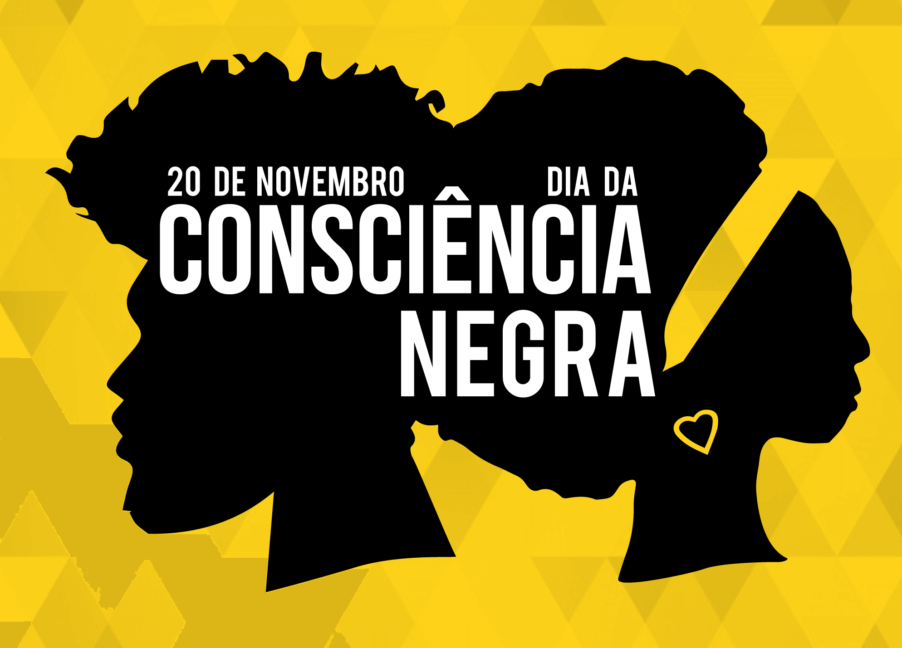
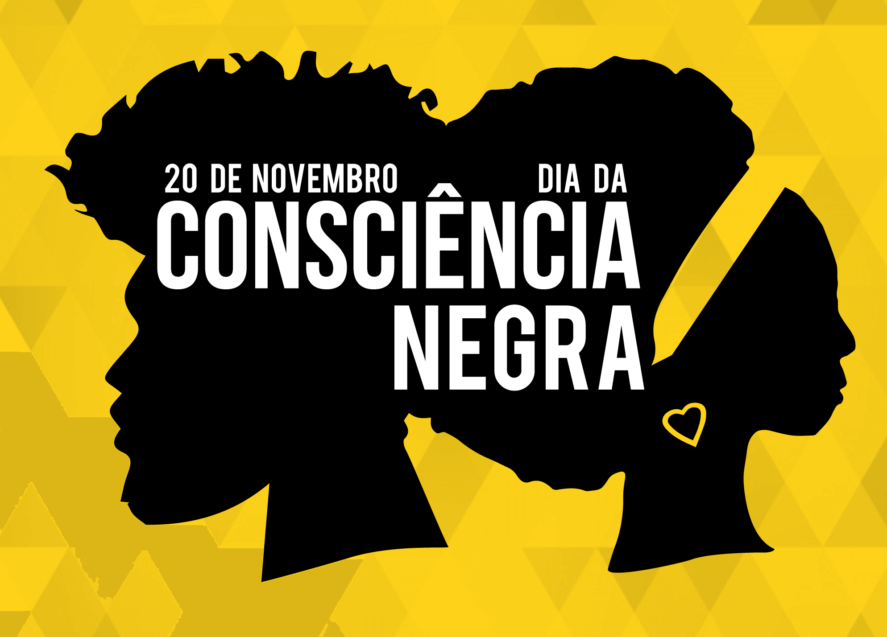

A cultura afro-brasileira é uma fusão das tradições africanas com elementos indígenas e europeus, resultando em uma identidade única e rica. Ela se manifesta de várias formas, como na música (samba, funk), nas danças (capoeira, samba de roda), na religião (candomblé, umbanda) e na culinária (feijoada, acarajé). Essas expressões culturais são fundamentais para a resistência e preservação da história negra no Brasil. Refletir sobre essa cultura é essencial para combater o racismo e reconhecer a importância das contribuições do povo negro para a formação da identidade brasileira.
A Influência do Samba
O samba tem raízes na cultura afro-brasileira, originado nas comunidades negras do Rio de Janeiro no início do século XX, misturando influências africanas, indígenas e portuguesas. Com ritmos sincopados e instrumentos como surdo, cuíca e pandeiro, o samba se popularizou especialmente no Carnaval e se tornou símbolo da identidade cultural brasileira. Ele é uma expressão de resistência, alegria e diversidade, e continua a influenciar músicos e dançarinos no Brasil e no mundo, além de promover a valorização da cultura negra.
A Capoeira

A capoeira é uma mistura de arte marcial, dança e música, criada pelos africanos escravizados no Brasil como forma de resistência disfarçada de dança. Seus movimentos ágeis e circulares eram treinamentos para a luta. A prática envolve elementos como a ginga (movimento básico), o berimbau (instrumento musical) e músicas tradicionais. Reconhecida como patrimônio cultural imaterial do Brasil, a capoeira é uma expressão de resistência, liberdade e identidade negra, sendo praticada mundialmente como símbolo de cultura e inclusão.

 
